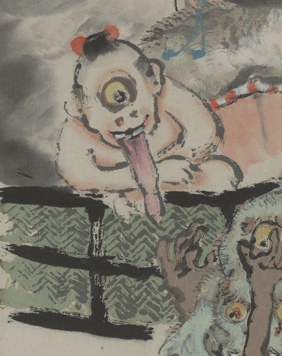

一つ目小僧。大きな丸い目玉が一つだけ額についている。長い舌を出している。体は裸である。
出典：親書誌：U426_nichibunken_0149：〔舌切雀之図；シタキリスズメノズ〕／日付：2010／資源識別子：U426_nichibunken_0149_0002_0000
Copyright (c)2010- International Research Center for Japanese Studies, Kyoto, Japan. All rights reserved.